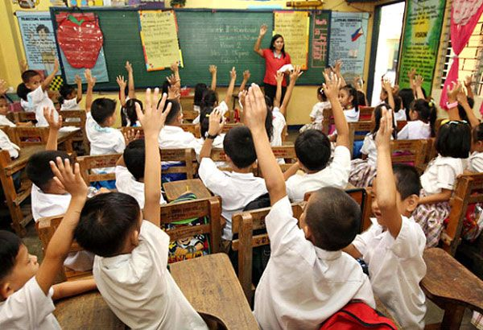
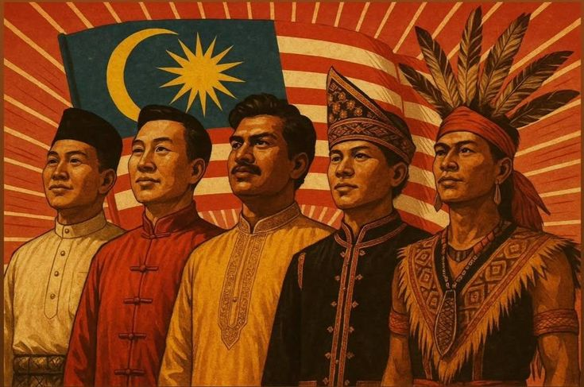
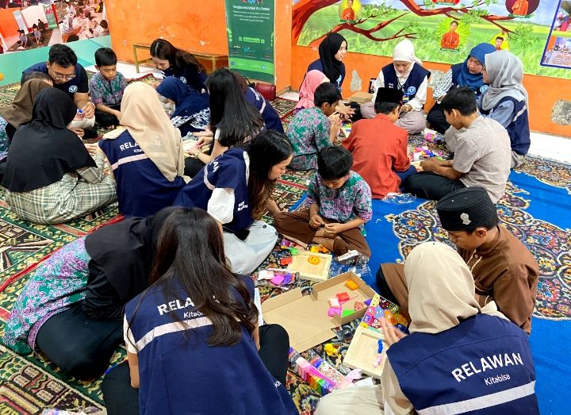
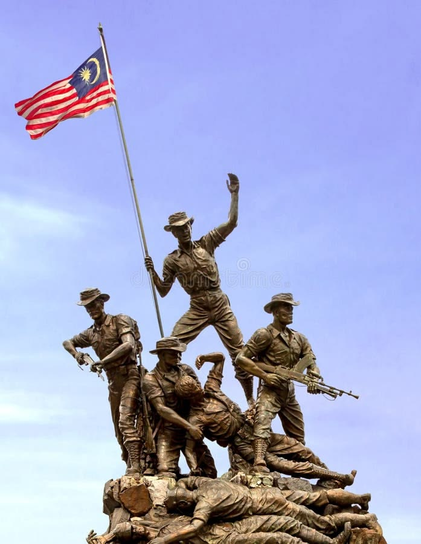
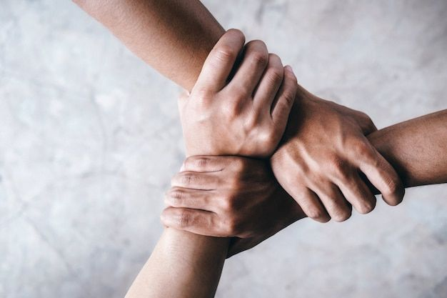
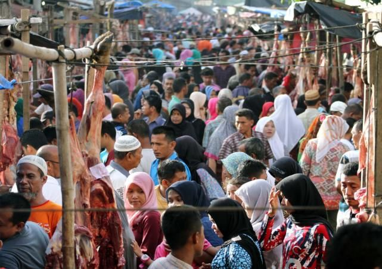

Mewujudkan keharmonian
Menjamin hubungan sosial yang aman dan mesra dalam kalangan rakyat yang berbeza latar belakang.
Sejarah & Sosial
Dasar-dasar kerajaan menjadi landasan utama dalam membentuk keharmonian, keamanan, dan perpaduan rakyat yang berbilang kaum di Malaysia. Kesepaduan sosial dan semangat nasionalisme perlu dipupuk secara berterusan demi kelestarian negara.
Pengenalan
Malaysia merupakan sebuah negara yang berbilang kaum, agama, budaya, dan bahasa. Oleh itu, perpaduan nasional adalah salah satu elemen penting dalam mengekalkan kestabilan serta memastikan kemajuan dalam aspek politik, ekonomi, sosial, dan pendidikan.
Kerajaan memainkan peranan yang besar dalam membangunkan dasar yang menyatukan rakyat melalui pendidikan, kebudayaan, pembangunan negara, serta program-program yang memupuk semangat toleransi dan patriotisme.
Objektif
Menjamin hubungan sosial yang aman dan mesra dalam kalangan rakyat yang berbeza latar belakang.
Menanamkan semangat cinta terhadap negara agar rakyat sentiasa berusaha menjaga keamanan dan kemakmuran negara.
Menggalakkan sikap hormat-menghormati antara kaum, agama, dan budaya demi keseimbangan masyarakat.
Dasar Kerajaan
Nilai agama menjadi asas akhlak dan semangat toleransi dalam kehidupan masyarakat majmuk.
Rakyat digalakkan menumpukan taat setia terhadap negara serta menghormati institusi raja dan kerajaan.
Kerajaan menekankan amalan hidup bersama, saling menghormati, dan menghapuskan prasangka antara kaum.
Sistem pendidikan yang inklusif membantu melahirkan generasi yang berjiwa patriotik dan memahami kepentingan perpaduan.
Kepentingan
Perpaduan nasional bukan sekadar slogan, tetapi amalan yang perlu diamalkan dalam kehidupan seharian. Ia membantu rakyat hidup dalam suasana aman, adil, dan sejahtera tanpa mengira latar belakang.
Faktor Utama

Pendidikan membentuk sikap toleransi, menghargai kepelbagaian, dan menanamkan semangat nasionalisme sejak kecil.

Pelbagai budaya dapat dipelihara dan dijadikan aset kebangsaan yang mengeratkan hubungan sosial dalam masyarakat.
Kesejahteraan ekonomi membantu rakyat hidup dengan selesa, adil, dan setia kepada negara tanpa ketidakseimbangan sosial.
Peraturan dan undang-undang memastikan keharmonian dapat dikekalkan melalui keadilan serta keseimbangan masyarakat.
Kerajaan serta media memainkan peranan penting dalam menyebarkan mesej perpaduan, menolak sentimen perkauman, dan memperkukuh semangat patriotik rakyat.

Program gotong-royong, sukan, dan sambutan perayaan memberi peluang rakyat berinteraksi, memahami budaya masing-masing, dan membina hubungan yang lebih erat.
Contoh Usaha
Penguatan kurikulum serta penyertaan dalam aktiviti kokurikulum mendorong hubungan erat antara pelbagai kaum.
Sambutan Hari Kebangsaan memperkukuh semangat patriotisme dan rasa cinta terhadap negara dalam kalangan rakyat.
Aktiviti gotong-royong, sukan, dan kebudayaan mengeratkan hubungan sosial serta mengekalkan semangat bekerjasama.
Galeri

Sambutan kebangsaan

Aktiviti perpaduan

Pendidikan dan masyarakat
Rujukan
Rumusan
Dasar-dasar kerajaan yang berlandaskan toleransi, keadilan, dan semangat patriotisme dapat membentuk masyarakat yang bersatu padu. Kejayaan sesebuah negara bergantung kepada kesepaduan rakyat dalam menjaga keamanan, keharmonian, dan kemakmuran bersama.